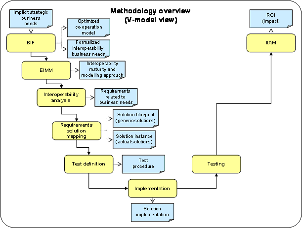

")

Baseline interoperability methodology
Overview
The AIM defines a baseline methodology which provides a particular integration of a set of methods developed in the ATHENA project. The baseline methodology could be used as is, or be configured and/or extended to the specific needs of the interoperability project in question.
The purpose of the methodology is to provide simple guide the users of the AIF to:
- Identify interoperability issues in their collaboration context.
- Select the appropriate ATHENA solutions and understand how to apply them.
The figure below depicts a view of the AIM according to a V-model representation.

The activities of the AIM describe the use of the following methods:
- The Business Interoperability Framework (BIF) [ATHENA B3 2006a] is a framework for determining business challenges related to interoperability according to implicit and not formalised strategic business needs. The BIF can be used to define the level of business interoperability for a given co-operation scenario. The co-operation model allows us to find optimisation potential for one collaboration and compare results with other collaborations.
- The Enterprise Interoperability Maturity Model (EIMM) [ATHENA A1 2005c] method defines a set of area of concerns and a set of maturity levels that provide the means to determine the current ability of an enterprise to collaborate with external entities and to specify the path to improve this ability. The integration matrix of the establishment methodology deduces the appropriate modelling approach for supporting analysis.
- The interoperability analysis method focus on the common understanding of the enterprise artefacts needed to achieve interoperability on the different levels. This involves understanding and relating different enterprise models, defining cross-organisational business process models, agree on service interfaces over which the partners communicate and exchange messages.
- The requirements – solution mapping method takes as input the business needs and technical requirements identified in the interoperability analysis. The mapping methodology is helping different kinds of users to find potential ATHENA solutions and solution packages regarding their requirements. Based on annotation by contextual elements of interoperability issues (reflecting a set of specific technical requirements) and generic solutions we can support semi-automated mapping between them.
- The ATHENA Testing Framework [ATHENA B5 2005] which includes the activities test definition and testing is a framework to support conformance and interoperability testing. It describes a test architecture and how these can be combined to create a test configuration for various types of testing. It also describes the test material to be processed by this architecture, a markup language and format for representing test requirements, test cases and messages exchanged.
- The implementation activity focuses on the solution implementation. Depending on the indicated solution approach given by the requirements – solution mapping, different (and possibly alternative) implementation methods can be chosen. The implementation methods should follow a configurable and situational-based method engineering approach, where the individual method components can be characterised according to the AIF conceptual framework.
- The Interoperability Impact Analysis Model (IIAM) [ATHENA B3 2006b] method focuses on the return of investment (ROI) and the impact of the interoperability measures.
The steps of the methodology can be executed independently. This means it is possible to start not with the BIF in case of existing interoperability business needs or to select only one step in order to perform an interoperability project.